1 入门
不管你打算用 Scribble 做什么，去生成一些简单的 HTML 和/或 PDF 文档是个好的开始。 这一章带你过一遍基础的东西，以 Next Steps 结尾，其中包含一些目标明确的 如何继续学习的建议。
1.1 第一个例子
创建一个包含以下内容的文件 "mouse.scrbl"：
#lang scribble/base @title{论老鼠吃饼干的习惯} 如果你给老鼠一块饼干，他会再要一杯牛奶。
第一行 #lang scribble/base 表明该文件是个 Scribble 文档。文档起始于“文本模式”，@ 字符用于转义像 title 这类的操作符，花括号中的参数以“文本模式”解读传递给操作符。剩余部分是文档内容。
现在运行 scribble 命令行程序，指定你希望输出的文档格式：
- 执行scribble mouse.scrbl生成 HTML 到 "mouse.html"。
- 执行scribble --htmls mouse.scrbl生成 HTML 到 "mouse/index.html"。各子节（后面我们会讲到） 将生成到 "mouse" 目录下的独立文件。
- 执行scribble --pdf mouse.scrbl生成 PDF 文件 "mouse.pdf". 只有在安装了 pdflatex 的情况下这个才可用。如果你想查看 latex 格式的中间文件，尝试执行scribble --latex mouse.scrbl生成 "mouse.tex"。
在章节 Running scribble 查看更多关于 scribble 命令行工具的信息。
1.2 多个小节
在 "mouse.scrbl" 中添加更多内容：
#lang scribble/base @title{论老鼠吃饼干的习惯} 如果你给老鼠一块饼干，他会再要一杯牛奶。 @section{给牛奶的后果} 老鼠发出``吱吱'''要牛奶。假设你给他一大杯牛奶。 他是一只小老鼠，杯子太大---过于大了。于是他可能又要跟你要稻草了。你可能也会给他。 @section{不是最后一根稻草} 现在，为了处理沾满牛奶的胡须，要给他一张餐巾。但这没有完...哦，天那。
现在文档第一段之后多了两个小节，每个小节通过调用 section 创建。 第一个小节包含两段文字。第二节，从第二个 section 调用开始，包含 一个段落。
再次执行 第一个例子 中示例过的 scribble 命令。你可能已经注 意到了结果中的双引号以及 --- 转换成的破折号。
1.3 分割文档源码
当文档变得越来越大，将各小节分割到不同的源文件更好。include-section 操作 符可以用来将多个 ".scrbl" 文件合并成一个文档。
将前面的示例文档分割成多个文件，把 "mouse.scrbl" 改成
#lang scribble/base @title{论老鼠吃饼干的习惯} 如果你给老鼠一块饼干，他会再要一杯牛奶。 @include-section["milk.scrbl"] @include-section["straw.scrbl"]
在 "mouse.scrbl" 所在目录创建 "milk.scrbl" 和 "straw.scrbl" 文件，在 "milk.scrbl" 中添加内容：
#lang scribble/base @title{给牛奶的后果} 老鼠发出``吱吱'''要牛奶。假设你给他一大杯牛奶。 他是一只小老鼠，杯子太大---过于大了。于是他可能又要跟你要稻草了。你可能也会给他。
在 "straw.scrbl" 中添加：
#lang scribble/base @title{不是最后一根稻草} 现在，为了处理沾满牛奶的胡须，要给他一张餐巾。但这没有完...哦，天那。
注意到新建的文件和之前的文档一样，也都以 #lang 开头，不过原来文档中的 section 变成了 title。 "milk.scrbl" 和 "straw.scrbl" 是独立的文档，有自己的标题，它们 也可以独立的通过 scribble 命令渲染。同时当使用 scribble 渲染 "mouse.scrbl" 时，将把这些较小的文件合并成一个，和未分割前的结果一致。
1.4 文档样式
Scribble 当前仅支持一种形式的 HTML 输出。你可以替换输出页面的样式文件 "scribble.css"，对于 HTML 输出的样式，能做的应该就只是这样了。（我们 期望未来添加更多的样式。）
对于基于 Latex 的 PDF 输出，Scribble 内置多种页面布局支持。"mouse.scrbl"
例子使用了默认的 Latex 样式。如果你希望提交关于该文章到一个编程语言的研讨会—
#lang scribble/sigplan
如果你在准备一份 Racket 库文档，将第一行修改为：
#lang scribble/manual
其输出中将会有一个单独的标题页，该页包含文档摘要，且最上一级的小节变成会另起一页 开始的章节。如果将文档分割成多个文件，主文档的第一行决定输出的格式。
使用 scribble/sigplan 或者 scribble/manual
不会改变文档渲染出的 HTML—
#lang scribble/sigplan @title{论老鼠吃饼干的习惯} @abstract{如果你给老鼠一块饼干，他会再要一杯牛奶。} @section{给牛奶的后果} ....
当渲染为 HTML 时，abstract 标记的部分显示为一个插入的自然段。如果在 scribble/base 或 scribble/manual 文档语言中使用 abstract，将得到一个错误，因为在它们中 abstract 未定义。
当一个文档通过多个文件实现，改变主文档的语言将改变文档所有部分的样式设定，但是 它不会为各子文件引入该语言的绑定。例如，如果你改变了 "mouse.scrbl" 的 语言为 scribble/sigplan，那么 abstract 将在 "mouse.scrbl" 中可用，但在 "milk.scrbl" 或 "straw.scrbl" 中仍不可用。换句话说，操作符名字是词法作用域的。
1.5 更多函数
scribble/base 语言提供了一组基本操作 （scribble/sigplan 和 scribble/manual 是 scribble/base 的超集）。提供的这些操作很多是可以引用于文本的样式。
他是一只@smaller{小老鼠}，杯子太@larger{大}--- @bold{@larger{过于@larger{大}了}}。于是他@italic{可能}又要跟你要稻草了。 你可能也会给他。
它将渲染得到：
他是一只小老鼠，杯子太大—
过于大了。于是他可能又要跟你要稻草了。 你可能也会给他。
你可能已经预料到了，诸如 smaller、larger 和 bold 这样的函数调用可能嵌套在其它函数调用中，它们也能嵌套于 "title" 或 "section" 中。
@section{@italic{不是}最后一根稻草}
1.5.1 居中
centered 操作符使文本居中：
如果老鼠吃完了你的所有饼干，然后举个牌子写着 @centered{ @bold{要饼干} @italic{有巧克力更好！} } 看有人会给你些吧。
它渲染得到
如果老鼠吃完了你的所有饼干，然后举个牌子写着要饼干
有巧克力更好！
看有人会给你些吧。
1.5.2 边注
margin-note 操作符的使用方式和上面无异，但是将渲染的文本移动到边缘。 如果你使用 margin-note，内容显示在这。
1.5.3 枚举
itemlist 创建一个无序符号列表，item 创建列表的一个条目。 itemlist 的使用方式和前面有些许区别，因为它仅接受 item 产出的值，而不是任意文本。这种不同体现在接受参数时使用 [...]， 而不是 {...} 上：
@centered{@bold{对老鼠的通知}} @itemlist[@item{我们能为你提供饼干。} @item{但是如果你想吃饼干，你得自带稻草。}]
这渲染得到：
对老鼠的通知
我们能为你提供饼干。
但是如果你想吃饼干，你得自带稻草。
1.5.4 表格
tabular 函数接收一个列表的列表，渲染得到一个二维的表格。默认情况下， 列直接没有分割，使用 #:sep 参数可以添加列分隔符，例如：
@tabular[#:sep @hspace[1] (list (list @bold{动物} @bold{食物}) (list "老鼠" "饼干") (list "驯鹿" "松饼"))]
渲染得到
动物
食物
老鼠
饼干
驯鹿
松饼
1.6 参数的使用：文本模式 vs. Racket 模式
一个操作符的参数使用 [...] 括起来的话，它们处于 Racket 模式而不是文本模式。即使在 Racket 模式中，仍可使用 @ 调用操作符；在如 scribble/base 语言（对应 racket） 中，@ 语法被启用，其行为在 Racket 和文本模式中一致。
参数中使用 Racket 模式的一个好处是我们可以传递关键字标记的可选参数。例如对于 itemlist，如果我们希望生成一个数字符号列表而不是无序符号列表，就可以 使用 #:style 关键字传递一个 'ordered 样式参数。
@itemlist[#:style 'ordered @item{吃饼干。} @item{喝牛奶。} @item{擦嘴。} @item{...}]
操作符并不在乎参数是怎么传递过来的，不管是 [...] 还是 {...}。 大致地说 {...} 用于形成字符串类型的参数 (仅大致上而已。{...} 进行换行以及使用 @ 使得问题变得复杂了一点，我们将回到这点），所以
@italic{Yummy!}
等价于
@italic["Yummy!"]
同时也等价于 Racket 表达式
(italic "Yummy!")
这种等价关系也解释了为何 Scribble 函数文档采用 Racket 中的表示法。 如果你正在读此文档的 HTMl 格式，可以点击上面的 italic 来 访问其文档。你可能暂时不能理解该文档，但是本章结束后你应该就能理解了。
如果你希望在文本模式中提供参数，但同时也希望能传递其它的可选参数， 该怎么办？一个操作符上可以同时使用 [...] 和 {...}，只要 [...] 在前， 且没有字符分割右闭 ] 字符和左开字符 { 即可。 例如，调用 italic 等同于使用 elem 并加上 'italic 样式：
@elem[#:style 'italic]{Yummy!}
你还能 omit [...] 和 {...}。这种情况下 @ 后的 Racket 表达式直接被使用，而不是被当作一个操作符。例如，
1 plus 2 is @(number->string (+ 1 2)).
渲染得
1 plus 2 is 3.
对于 number->string 的调用是必要的，因为数不是合法的文档内容。
1.7 @ Syntax Basics
The @ notation provided by Scribble is just another way of writing Racket expressions. Scribble documents could be constructed using normal Racket notation, without using @ at all, but that would be inconvenient for most purposes. The @ notation makes dealing with textual content much easier.
Whether in text mode or Racket mode, @ in a document provides an escape to Racket mode. The basic syntax of @ is
@ ‹cmd› [ ‹datum›* ] { ‹text-body› }
where all three parts after @ are optional, but at least one must be present. No spaces are allowed between
@ and ‹cmd›, [, or {
‹cmd› and [ or {; or
] and {.
A ‹cmd› or ‹datum› is normal Racket notation, while a ‹text-body› is itself in text mode. A ‹cmd› obviously must not start with [ or {, even though Racket forms could otherwise start with those characters.
The expansion of just @‹cmd› into Racket code is
‹cmd›
When either [ ] or { } are used, the expansion is
(‹cmd› ‹datum›* ‹parsed-body›*)
where ‹parsed-body›* is the parse result of the ‹text-body›. The ‹parsed-body›* part often turns out to be a sequence of Racket strings.
In practice, the ‹cmd› is normally a Racket identifier that is bound to a procedure or syntactic form. If the procedure or form expects further text to typeset, then {...} supplies the text. If the form expects other data, typically [...] is used to surround Racket arguments, instead. Even if an operation’s argument is a string, if the string is not used as content text (but instead used as, say, a hyperlink label), then the string is typically provided through [...] instead of {...}. Sometimes, both [...] and {...} are used, where the former surround Racket arguments that precede text to typeset. Finally, if a form is a purely Racket-level form with not typeset result, such as a require to import more operations, then typically just @ is used.
For example the text-mode stream
@(require scriblib/figure) @section[#:tag "poetry"]{Of Mice and Cookies} See @secref["milk"]. @section[#:tag "milk"]{@italic{Important} Milk Supplies} @figure["straw" @elem{A straw}]{@image["straw.png"]}
is equivalent to the Racket-mode sequence
(require scriblib/figure) "\n" "\n" (section #:tag "poetry" "Of Mice and Cookies") "\n" "See " (secref "milk") "." "\n" "\n" (section #:tag "milk" (italic "Important") " Milk Supplies") "\n" (figure "straw" (elem "A straw") (image "straw.png")) "\n"
Besides showing how different argument conventions are used for
different operations, the above example illustrates how whitespace is
preserved in the Racket form of a text-mode stream—
In addition to its role for command, a @ can be followed by ; to start a comment. If the character after ; is {, then the comment runs until a matching }, otherwise the comment runs until the end-of-line:
@;{ ‹comment› } @; ‹line-comment›
For more information on the syntax of @, see @ Syntax. The full syntax includes a few more details, such as brackets like |{...}| for text-mode arguments while disabling @ between the brackets.
1.8 Decoding Sequences
In a document that starts #lang scribble/base, the top level is a text-mode stream, just like the ‹text-body› in a @ form. As illustrated in the previous section, such a top-level sequence corresponds to a mixture of Racket-mode strings and operation applications. There’s an implicit operation, decode, that wraps the whole document to consume this mixture of strings and other values and turn them into a document description.
The decode operation implements flow decoding, which takes a document stream and breaks it up into sections and paragraphs. Blank lines delimit paragraphs, and the results of operations like title and section generate “here’s the title” or “a new section starts here” declarations that are recognized by decode.
A different but related content decoding takes place within a paragraph or section title. Content decoding is responsible for converting --- to an em dash or for converting " and ' to suitable curly quotes.
The decoding process for document’s stream is ultimately determined by the #lang line that starts the document. The scribble/base, scribble/manual, and scribble/sigplan languages all use the same decode operation. The scribble/text language, however, acts more like a plain-text generator and preprocessor, and it does not perform any such decoding rules. (For more on scribble/text, see Scribble as Preprocessor.)
More precisely, languages like scribble/base apply decode only after lifting out all definitions and imports from the document stream.
When the flow decoder is used, after it breaks the input stream into paragraphs, it applies content decoding to strings within the paragraph. When content is wrapped with an operation, however, content decoding does not apply automatically. An operation is responsible for calling a content or flow decoder as it sees fit. Most operations call the decoder; for example, italic, bold, smaller, etc., all decode their arguments. Similarly, title and section decode the given content for the title or section name. The literal and verbatim operators, however, do not decode the given strings. For example,
@verbatim{---}
renders as
---
Don’t confuse decoding with the expansion of @ notation. The source form
@verbatim{@(number->string (+ 1 2))}
renders as
3
because the source is equivalent to
(verbatim (number->string (+ 1 2)))
where (number->string (+ 1 2)) is evaluated to produce the argument to verbatim. The |{...}| style of brackets is often used with verbatim, because |{...}| disables @ notation for arguments. For example,
@verbatim|{@(number->string (+ 1 2))}|
renders as
@(number->string (+ 1 2))
1.9 Pictures
Any value that is convertable to an image can be used directly within a Scribble document. Functions from the pict and 2htdp/image libraries, for example, generate images. For example,
@(require pict) This cookie has lost its chocolate chips: @(colorize (filled-ellipse 40 40) "beige").
renders as
This cookie has lost its chocolate chips: .
1.10 Next Steps
If your immediate goal is to document a Racket library or write literate programs, skip to Getting Started with Documentation, and then go back to @ Syntax and other chapters.
If you are more interested in producing documents unrelated to Racket, continue with @ Syntax and then High-Level Scribble API. Move on to Low-Level Scribble API when you need more power.
If you are interested in text generation and preprocessing, continue with @ Syntax, but then switch to Scribble as Preprocessor.